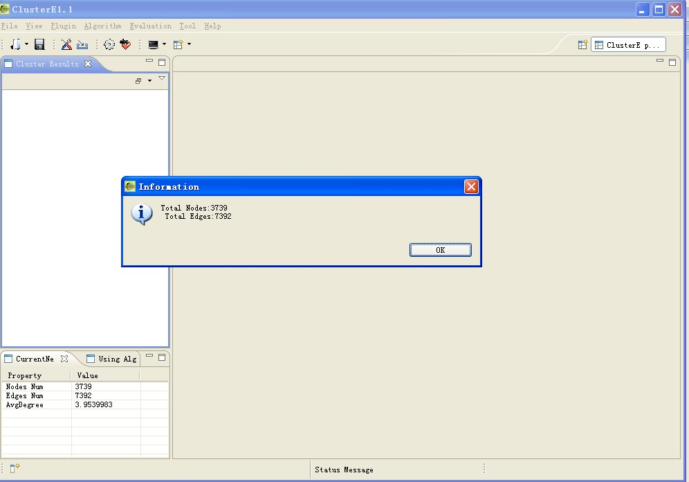
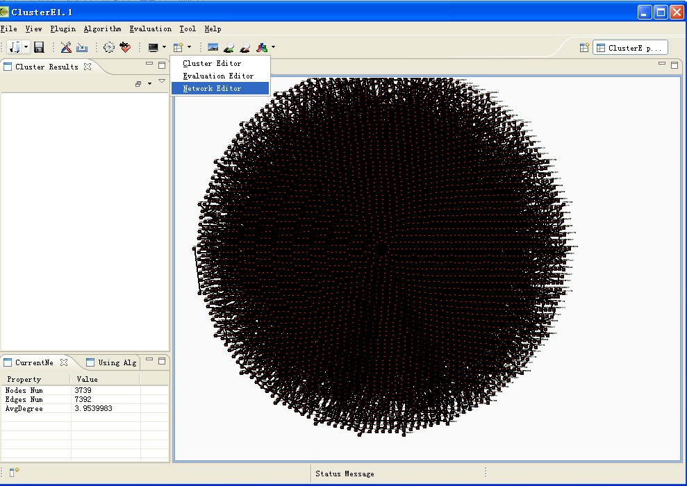
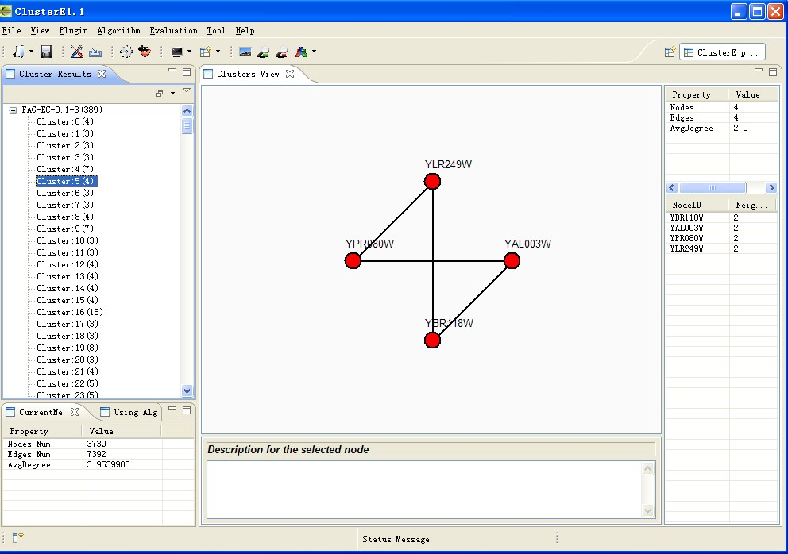
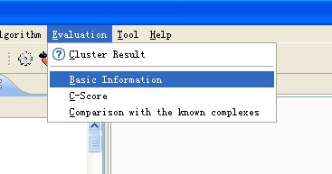
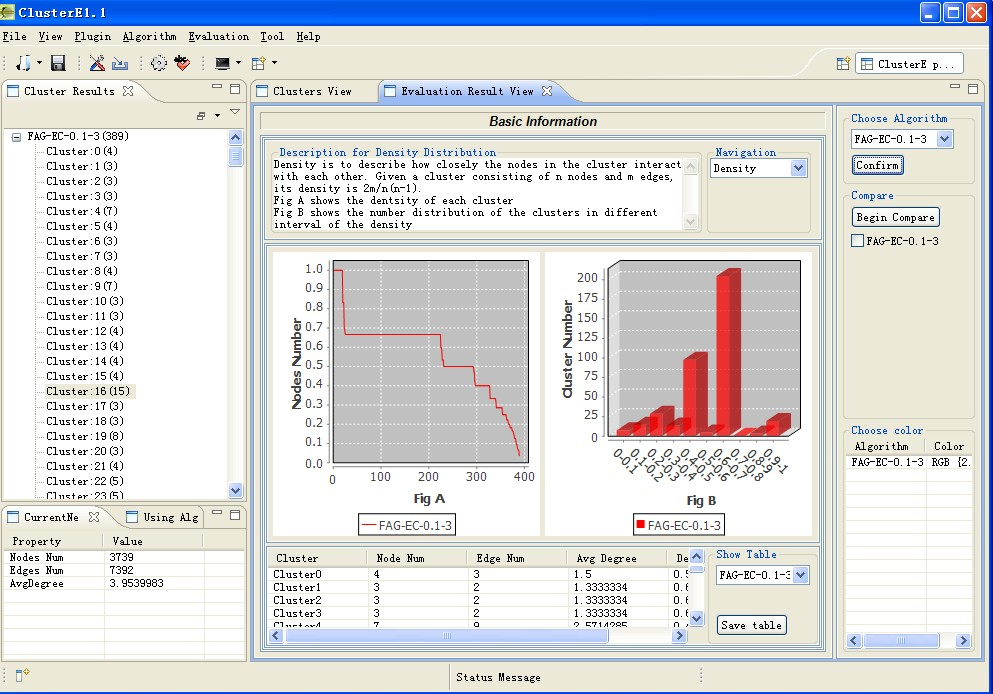

ClusterE系统主要操作步骤：
1，蛋白质网络读取：
（1）原始蛋白质网络读取
文件格式：
读取完成后

可以选择查看完整网络图：

（2）ClusterE系统保存的蛋白质网络聚类结果文件读取
文件格式
2,实现蛋白质网络聚类算法
选择聚类算法进行聚类分析：聚类算法菜单在Algorithm菜单下：
选择其中一个算法 执行：如果该算法需要参数则会弹出如下参数设置对话框：
参数设置完成后选择confirm开始聚类分析，聚类完成后如下所示：

聚类结果以树形方式展示。点击每个树节点都会可视化方式展示相应的复合物信息：
聚类结果还有一种显示方式，显示复合物之间的交叠情况，如果要转到查看交叠情况的师徒下则 在界面左边视图中右键：
选择Show Overla菜单则可以查看复合物之间交叠情况 ：
由于该算法FAG-EC聚类结果没哟交叠情况，所以在编辑器中显示该复合物并没有与任何复合物交叠。
3,实现聚类算法评估
在完成了某个聚类算法的聚类后，并可以调用评估类方法插件 对该聚类算法进行各个方面指标评估。

在该菜单下选择评估方法：目前本系统已经有三个评估插件。现以Basic Information插件为例。
红色区域为该插件控制面板。右边蓝色区域为系统提供的实现聚类评估的控制面板。
如果在插件面板选择density参数进行分析。
